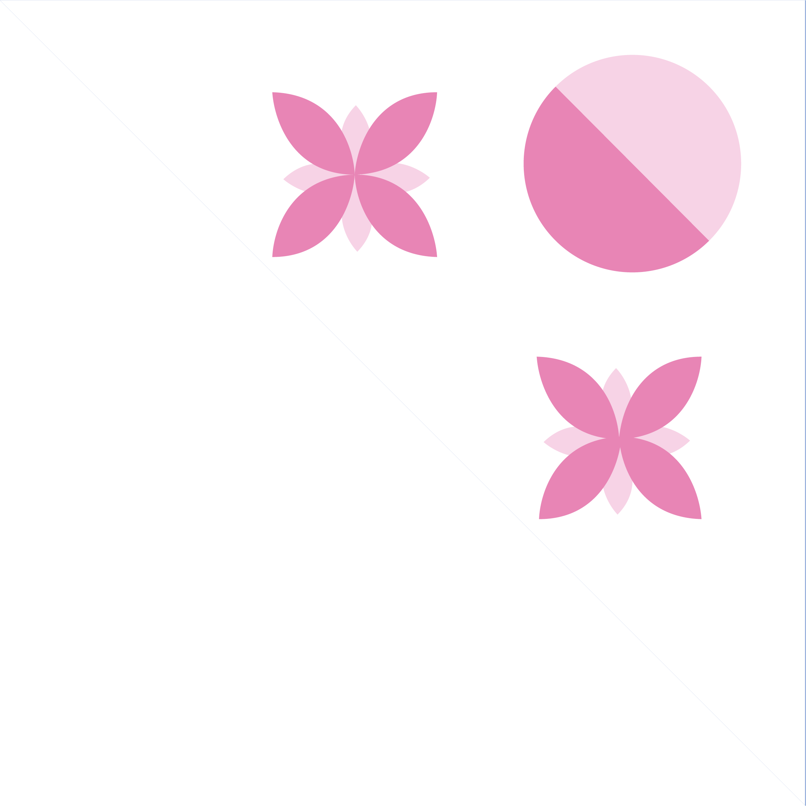
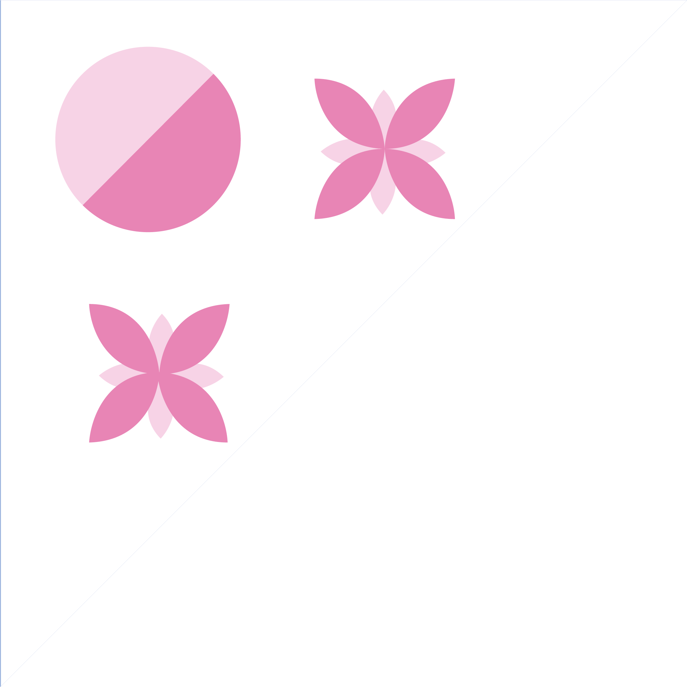

TODAYS CHALLENGE
24-08-2022 12:22
 Welcome back Sarah! Todays photography challenge is all about art! Amsterdam is a creative and innovative city, with a lot of artists. Take a walk around the city and look around, everything can be seen as art if you want it to. You can go to your favorite museum, but art is a very broad term, so don't be afraid to think outside the box.
Keep your eyes open and stay alert, don't miss the small details! Goodluck and have fun today! :)